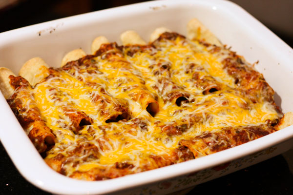

Beef Enchiladas

Description
This is a quick and simple five ingredient recipe for
ground beef enchiladas.
Ingredients
- 1 lb. ground beef
- 1/2 jar 505 Southwestern salsa
- 5 cups shredded Colby Jack cheese
- 6 burrito sized tortillas
- 1 15 oz. can Old El Paso enchilada sauce
Required Cookware
- 9 x 13 baking pan
- 12 inch skillet
- Cooking grease (optional)
Steps
- Preheat oven to 375 degrees Fahrenheit
- Preheat skillet on medium-high heat
- Add beef to skillet and cook until browned
- Reduce heat to medium-low
- Drain skillet and place back on stove
- Add salsa and stir until uniformly distributed
- Add 3 ounces shredded cheese and stir evenly until melted
- Scoop some of beef, salsa, and cheese filling into a
tortilla
- Roll into a burrito and place into a greased (optional)
9 x 13 baking pan
- Repeat until filling runs out
- Pour enchilada sauce over top of the enchiladas completely
covering the top and sides
- Sprinkle remaining shredded cheese on top of enchiladas
- Place baking pan in oven for 16 minutes
- Let cool for three minutes and serve